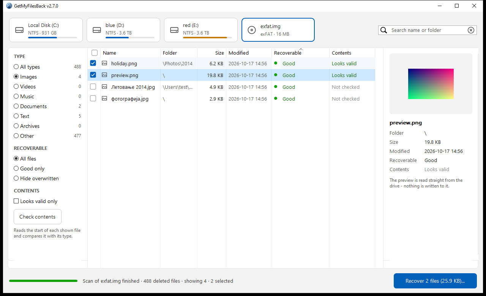
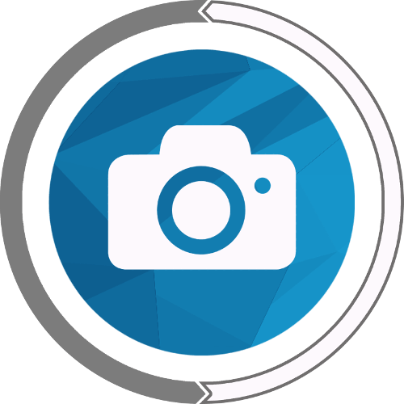
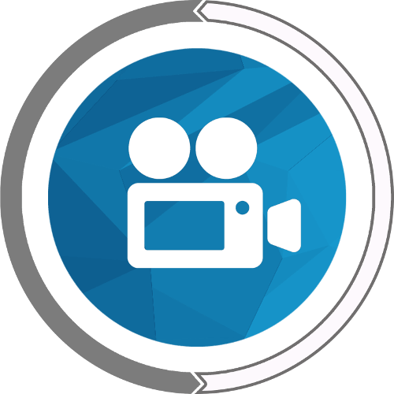
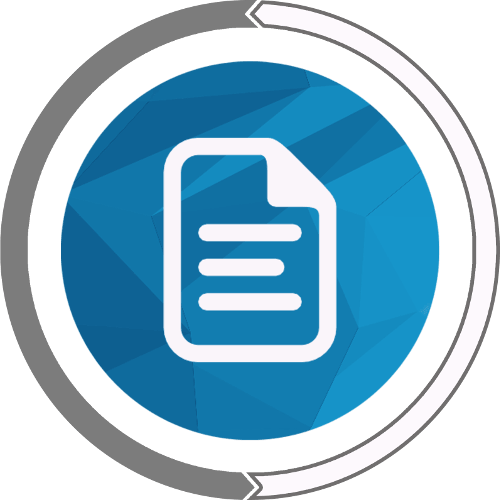
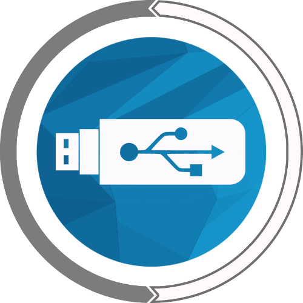
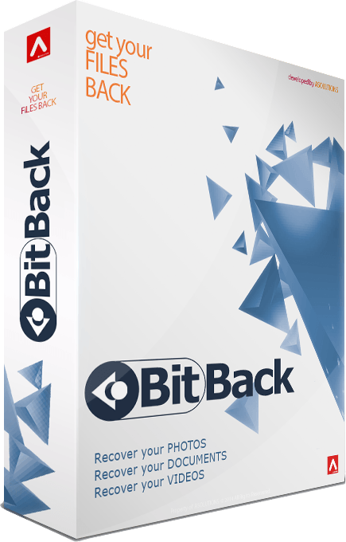

Get your deleted files back.
BitBack finds the photos, videos and documents you deleted from a hard disk, USB stick or memory card - and shows you which of them can still be saved, before you recover a single one.
- No installation
- Windows 10 and 11
- Only reads your drive

Stop saving to that drive now. Every new file can take the place of the one you want back.
How it works
Three steps, no technical knowledge needed.
-
Pick the drive
Choose the drive the files were on - an internal disk, an external one, a USB stick or a memory card. The deleted files start showing up right away, while the drive is being scanned.
-
Tick the files you want
Search by name or folder, filter by type, and look at a preview. Every file is rated, so you know which ones are still whole before you recover anything.
-
Recover them to another drive
BitBack saves the files with their original names and dates - to a different drive, so nothing it writes can overwrite what you are trying to save. It warns you if you pick the same one.
Why deleted files can come back
When a file is deleted, its data stays on the drive. Windows only marks the place where the file was as free and uses it again later, when it needs the space. Until something new is written there, BitBack can get the file back.
What the ratings mean
What BitBack recovers

Photos
JPEG, PNG, RAW and other pictures. JPEG and PNG photos come with a preview, so you see them before you recover them.

Videos and music
MP4, MOV, AVI, MP3 and other formats, large video files included.

Documents
Word, Excel, PDF and text files. A content check tells you whether a file still holds what its name says.

Runs from a USB stick
One file, no installation - nothing gets written to the drive your files were on.
- Hard disks, USB sticks and SD cards: NTFS, FAT and exFAT
- Original names, folders and dates - also of files emptied from the Recycle Bin
- Files appear while the drive is scanned - no waiting for the end
- Tells you each file's chances before you recover it
- Only reads the drive it scans
- In English and German
What no recovery tool can do
We'd rather tell you now than after you've paid. BitBack shows you these cases in its list - with the rating it gives every file.
Bring back overwritten files
Once new data is stored where a file was, the file is gone. The sooner you scan, the more you get back.
Undo an SSD's cleanup
Most SSDs wipe deleted data on their own within minutes (TRIM). From an SSD, recently deleted files are often already gone - hard disks, USB sticks and memory cards keep them much longer.
Recover from a formatted drive
BitBack finds deleted files through the drive's own records, which formatting replaces.

Buy BitBack
[PRICE]
One payment. You download a single file - put it on a USB stick and it's ready.
- Recovers from hard disks, USB sticks and memory cards
- Windows 10 and 11 (64-bit)
- Support by email: support@bitback.org
Questions
Do I have to install it?
No. BitBack is a single file. Copy it to a USB stick and run it from there - installing a program on the drive you are recovering from could overwrite the very files you want back.
Which Windows does it need?
Windows 10 or 11, 64-bit. Windows asks for administrator rights when it starts, because BitBack reads the drive directly.
Which drives can it scan?
Internal and external hard disks, USB sticks and memory cards (SD, microSD) with the NTFS, FAT32, FAT16 or exFAT file system - which is what Windows, cameras and phones use. Not CDs or network drives.
Can it change or damage anything on my drive?
No. BitBack only reads the drive it scans. The files it recovers are saved to the folder you choose, and it warns you if that folder is on the drive you are recovering from.
The file was deleted months ago. Is there any point?
Often, yes - it depends on whether the space has been used again since. Scan the drive and look at the file's rating: "Good" means nothing has been written over it.
Will the files keep their names?
Almost always, with their folders and dates - also files that were deleted through the Recycle Bin and then emptied from it. The exception: on older FAT drives, a file with only a short name (like PHOTO.JPG) loses its first letter and comes back as _HOTO.JPG.